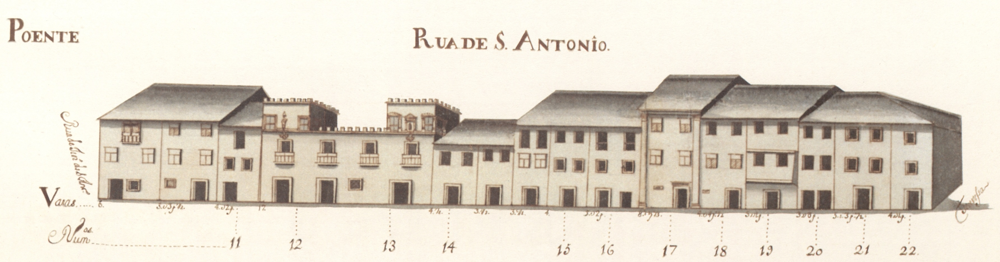
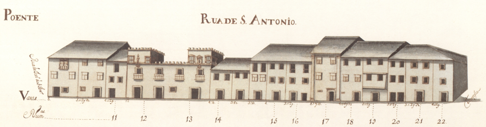

19 Rua de Sto. António
Pequena rua, que ligava a rua das Travessas com o Terreiro de Santo António . De raiz romana,
não sabemos qual teria sido a sua função na cidade medieval.
Em 1465 são transferidos para aqui os judeus e instalados no prédio mais interessante que hoje
aqui resta, e um dos mais estimáveis de toda a cidade, passando a ser denominada de Judiaria Nova .
Esta casa veio depois a pertencer ao cónego João de Meira Carrilho , que lhe pôs as suas armas.
No final de quatrocentos, com a obrigação que os judeus sofreram de abjurar a sua religião
passou a ser chamada de Sto. António, nome que se mantém.
Das 3 casas medievais que se vêem no alçado Nascente nada resta hoje infelizmente (uma já estava
em adiantada ruína). Do lado Poente conservam-se algumas casas, ainda. É curioso notar que as suas
construções têm um tipo de acabamento e proteção de janelas bem mais cuidado que a rua que
lhe era sequente, a das Chagas.
Esta artéria, que felizmente ainda hoje conserva o seu traçado original, tinha 7 casas do lado
Nascente e 15 do Poente, sendo 6 e 11, respectivamente, prazos do Cabido .
Visão original
 
 Visão atual


Casas
1 e 2 Francisco Soares de Novais, abade de S. Vicente do Bico 290 reis e 2 galinhas Encontram-se unidas, num só prazo, desde o ano de 1591 . Possuem frontaria para a travessa que vem da Rua de D. Gualdim para esta rua.
3 e 4 José da Cunda e Sousa 1420 e 4 galinhas Encontram-se unidas, num só prazo, desde o ano de 1524 .
5 Padre Miguel de Abreu 170 reis e 6 galinhas
6 Padre Miguel de Abreu 90 reis e 2 galinhas
7 e 8 Francisco Gonçalves Coudo, casado com Josefa Maria Madureira 150 reis e 4 galinhas Encontram-se unidas, num só prazo, desde o ano de 1592 .
9 Felícia Teresa, viúva de Luís de Barros 300 reis e 2 galinhas
10 António Coelho, abade de S. Martinho de Alvito 410 reis Possui frontaria para o rossio ou terreiro de Sto. António , com o qual confronta do sul.
11 Os herdeiros de Miguel de Araújo Barreto, tenente 350 reis e 2 galinhas
12 e 13 Agostinho Marques do Couto, cónego 1360 reis e 4 galinhas Estas casas (denominadas «Casas Torres» ), encontram-se unidas, num só prazo, desde o ano de 1697 . Na casa n.º 12, onde foi colocada a imagem de Sto. António, (antes de 1502 ), funcionou a antiga sinagoga.
14 Agostinho Marques do Couto, cónego 350 reis e 2 galinhas Confronta, do norte, com casa foreira ao mosteiro de Bouro .
15 Padre Agostinho de Araújo Álvares 240 reis e 2 galinhas
16 Padre Agostinho de Araújo Álvares 420 reis e 2 galinhas
17 Os herdeiros de João Luís Moreira, boticário 445 reis e 2 galinhas
18 Os herdeiros de João Luís Moreira, boticário 180 reis e 1 galinha
19 Padre Manuel de Chaves 430 reis e 2 galinhas
20 António de Lima e Abreu 220 reis e 2 galinhas A casa n.º 22 confronta, do norte, com a travessa que vem da Rua de D. Gualdim .
21 António de Lima e Abreu 520 reis e 2 galinhas A casa n.º 22 confronta, do norte, com a travessa que vem da Rua de D. Gualdim .
22 António de Lima e Abreu 440 reis e 2 galinhas A casa n.º 22 confronta, do norte, com a travessa que vem da Rua de D. Gualdim .